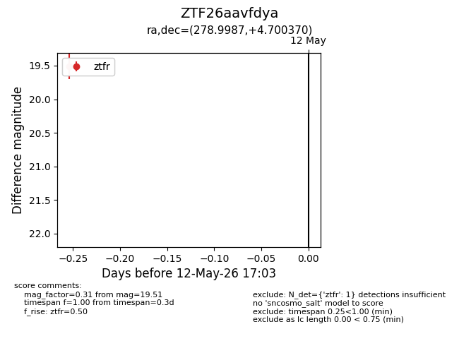
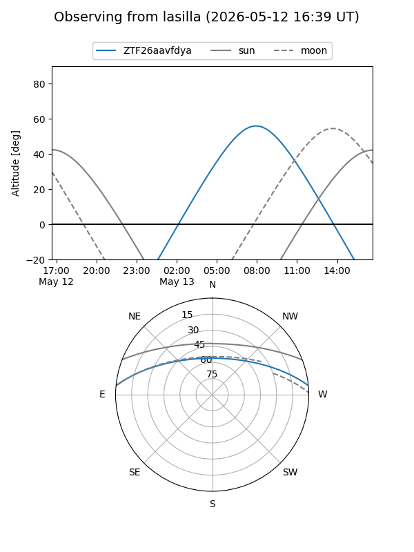
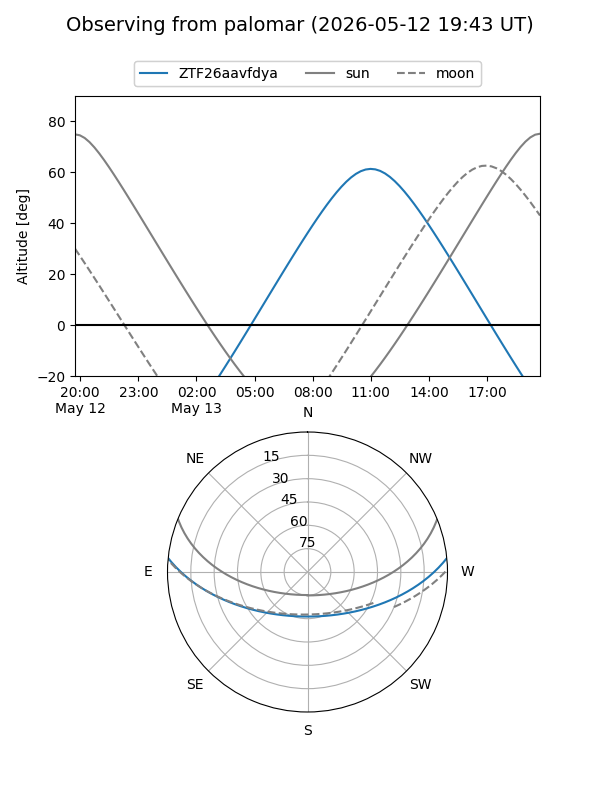

ZTF26aavfdya
Target ZTF26aavfdya at 2026-05-12 17:05
Aliases and brokers:
FINK: link
Lasair: link
ALeRCE: link
alt names
ZTF26aavfdya (ztf,fink_ztf)
Coordinates:
equatorial (ra, dec) = 278.9987,+4.70037
equatorial (HMS+DMS) = 18:35:59.69,+04:42:01.33
galactic (l, b) = (35.3695,+5.57158)
Flags:
Photometry:
last ztfr=19.51
1 ztfr detections
Lightcurve

Visibility


Additional plots